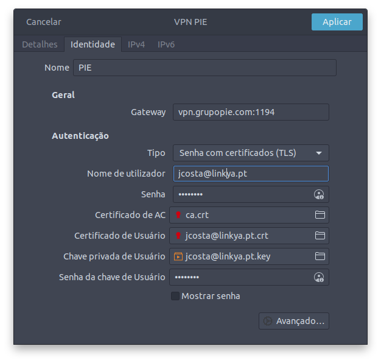

ubuntu-setup
setup your git account
git config user.email "josecosta@outlook.com"
git config user.name "Username"
cd ~/dev
ln -s /mnt/diskdata/var/www/html/dev diskdata
create google account with your email
https://accounts.google.com
connect to vpn
